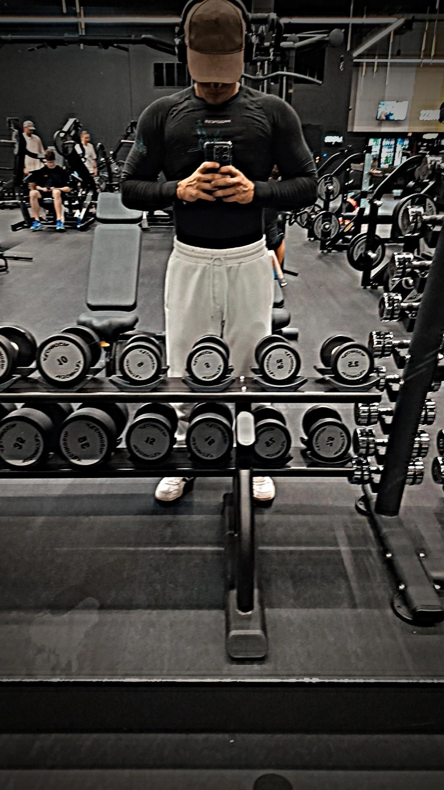

BEHIND TÁLTOSGAINS
The messy, imperfect,
honest grind.
An introvert. A gym. A little room to figure things out.

IRON THERAPY / A SPACE TO SWITCH OFF
No 5 AM persona required.
TáltosGains is built around a simple idea: training should add something to your life, not take it over.
There are no perfect morning routines here. No pretending every session feels amazing. Sometimes the win is walking through the door with an overthinking brain and walking out with a little more space in it.
I call that “Iron Therapy” — my way of describing the headspace I find in training. It’s a personal experience, not a promise that exercise fixes everything.
The comeback is functional.
I want strength that does something. Carry the heavy winter tires. Get outside. Keep up on a walk with an older dog. The mirror can wait; real life is happening now.
And when the session is done? There’s room for a couch, a game of CS2, and a slower afternoon. That is part of the story, too.
Visit the channelTHREE THINGS I COME BACK TO
A quieter head.
The value of a session isn’t only what you lift. It can be how you feel walking home.
A system you enjoy.
Goals can give direction. Enjoying the process gives you a reason to come back.
Room for the rest.
Training is one part of a full life. Rest, play and time outside belong in the picture.